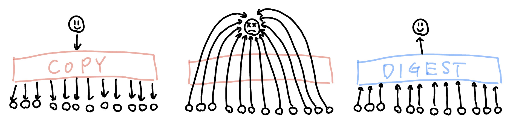

「ブロードリスニング（broad listening）」は「放送（broadcasting）」と対をなす概念です。 放送が一人の声を何百万人に届ける能力だとすれば、ブロードリスニングは何百万人の声を聞き、その集合的な知恵をひとつの共有された声にまとめ上げる能力です（この定式化は研究者 Andrew Trask によります）。 放送とブロードリスニングを組み合わせると「一人の人間が何百万人もの人々と会話できる」状態が成立します。

私は2023年4月、書籍『Plurality』の草稿を通じてこの概念に出会いました。当時のメモ：
私は人間の知的生産性の向上に関心がある。ブロードリスニングは生身の人間には不可能な「多勢の意見を聞くこと」を可能にする技術。なので、人間増強の一種として興味がある。
『コーディングを支える技術』（2013）から『エンジニアの知的生産術』（2018）まで一貫してきた関心軸は「知的生産性の向上」でした。 ブロードリスニングはその延長線上にあります。個人の知的生産の増強から、人間の他者理解能力の増強へ。 概念の整理は Scrapbox の 「ブロードリスニング：みんなが聖徳太子になる技術」 にまとまっています。